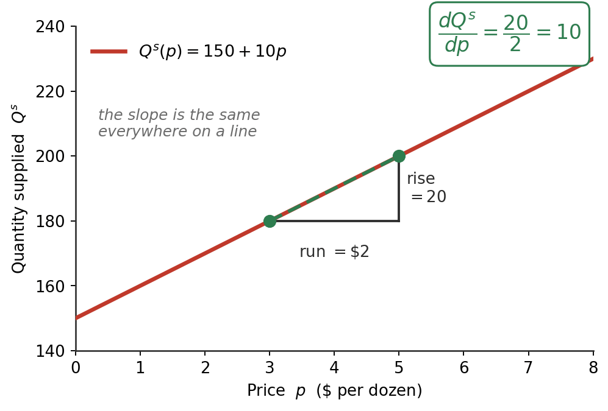
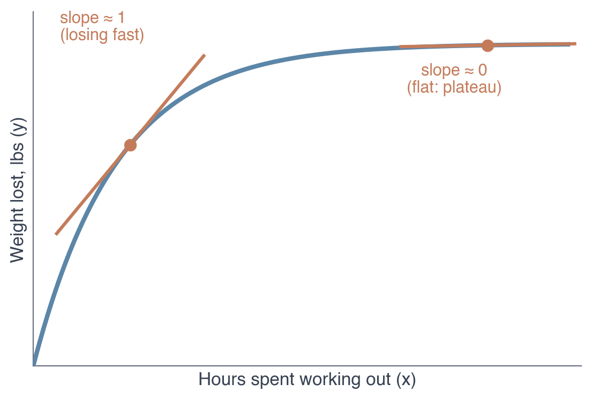
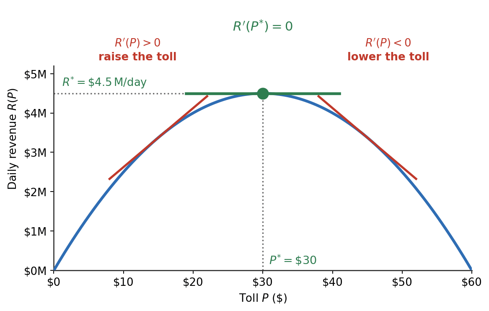

ECON 2316 • Microeconomic Theory
Read the short section for a chapter before that lecture. Nothing here is new economics — it is the notation the lecture will assume you can read.
Dr. Richeng Piao
Department of Economics • Northeastern University
\(\dfrac{dy}{dx}\)
\(\dfrac{\partial Q}{\partial p}\)
\(\varepsilon\)
Three short sections. Each covers only the notation its chapter actually asks you to use — click a card to jump.
Before Chapter 2
Marginal Thinking, Rules & Partials
What a derivative means, three rules for taking one, and solving for \(p^*\).
Before Chapter 3
Ratios, % Change, Elasticity, the Chain Rule & First-Order Conditions
Percentage change, a slope rescaled, the chain rule, and setting a derivative to zero to find the best price.
Before Chapter 4
Fractional Powers & Logs
Exponents like \(x^{1/3}\), and logs that leave preferences unchanged.
Chapter 1 needs nothing from here. It uses the idea of a derivative but never asks you to compute one.
No integral section — you are never asked to compute one. Lecture does consumer surplus and deadweight loss as triangles. You will still meet the integral notation in the book (§2.5, §3.6) and on the problem sets, where the task is to set the integral up and then evaluate it as an area — for the straight-line curves we use, the two agree exactly.
Before the rules, the idea. Three steps, and each is the last one sharpened.
1 · A ratio compares
\(\dfrac{\text{this}}{\text{that}}\)
Two numbers, divided, so you can say which is bigger and by how much.
2 · Marginal = one more
\(\dfrac{\Delta Q}{\Delta p}\)
A ratio of changes. How much quantity moves when the price moves — never the totals.
3 · Derivative = the limit
\(\dfrac{dQ}{dp}\)
The same ratio with the step shrunk to nothing. Exact, not approximate.
So every “marginal” in this course is a derivative — and the slope of a demand curve is one. Later chapters relabel it marginal cost, marginal revenue, marginal utility. One idea.
A partial derivative \(\left(\dfrac{\partial Q}{\partial p}\right)\) is the same thing with a promise attached: everything else is held still.

Take the supply curve from Chapter 2. Between \$3 and \$5, quantity rises by 20. Rise over run is \(20/2 = 10\).
Pick any other pair of prices and you get 10 again. That is what “linear” means — one number describes the whole curve.
So \(\dfrac{dQ^{s}}{dp}=10\), and the three rules on the next slides are just a way of reading that 10 straight off \(150+10p\) without drawing a triangle.
In general, if we have
\(f(x)=c \quad\Rightarrow\quad \dfrac{df(x)}{dx}=f'(x)=0\)
Example
\(Q^{s}=150\;\) (supply fixed at 150) so \(\;\dfrac{dQ^{s}}{dp}=0\)
the next rule
In general, if we have
\(f(x)=c\,x^{\alpha} \quad\Rightarrow\quad f'(x)=c\,\alpha\,x^{\alpha-1}\)
Example
\(Q^{s}=10p\;\) so \(\;c=10,\ \alpha=1\), and \(\;\dfrac{dQ^{s}}{dp}=10\)
the next rule
In general, if we have
\(f(x)=g(x)\pm h(x) \quad\Rightarrow\quad f'(x)=g'(x)\pm h'(x)\)
Example
\(Q^{s}=150+10p\;\Rightarrow\;\dfrac{dQ^{s}}{dp}=0+10=10\)
the next rule
Quantity demanded depends on the price and on income, tastes, the price of substitutes… A partial derivative asks: what if only the price moves?
\[\frac{\partial Q^{d}}{\partial p}\ =\ \text{slide along the curve}\]
The curly \(\partial\) is the only difference from \(d\). It signals “other things held still.”
This is exactly the movement along vs. shift distinction, written as maths: \(\partial Q^{d}/\partial p\) moves you along; a change in anything else shifts the curve.
A ratio is just a comparison of two numbers: how big is \(A\) relative to \(B\)? Write it \(A/B\) (read “\(A\) to \(B\)” or “\(A\) per \(B\)”).
The idea
\(\dfrac{A}{B} = 2\)
“\(A\) is twice \(B\).”
\(\dfrac{A}{B} = 0.5\)
“\(A\) is half of \(B\).”
\(\dfrac{A}{B} = 1\)
“\(A\) and \(B\) are equal.”
Apple \$1, water bottle \$2: ratio \(= 2/1 = 2\) — water is 2× the apple.
MBTA fare hike (July 2025)
New subway fare \(p_{\text{new}} = \$2.90\)
Old subway fare \(p_{\text{old}} = \$2.40\)
Ratio \(\dfrac{p_{\text{new}}}{p_{\text{old}}} = \dfrac{2.90}{2.40} \approx \mathbf{1.208}\)
“The new fare is 120.8% of the old fare” — or equivalently, “\$1.21 of new per \$1.00 of old.”
Order matters. \(2.90/2.40 = 1.208\) is “new per old.” Flipping it — \(2.40/2.90 \approx 0.828\) — says the old fare was 82.8% of the new. Same data, different ratio, different statement.
\(\displaystyle \%\Delta = \frac{\text{new} - \text{old}}{\text{old}} \times 100\%\)
MBTA — continued
Numerator: \(p_{\text{new}} - p_{\text{old}} = 2.90 - 2.40 = \mathbf{\$0.50}\)
Denominator: \(p_{\text{old}} = \mathbf{\$2.40}\)
\(\%\Delta p = \dfrac{0.50}{2.40} \approx 0.2083 = \mathbf{+20.83\%}\)
(a price increase)
Why “old” in the denominator?
We want the change relative to the starting point — \$0.50 from \$2.40 is meaningfully different from \$0.50 from \$50.
Sign convention
\(\%\Delta > 0\) rise · \(\%\Delta < 0\) fall · \(\%\Delta = 0\) no change
Building block of elasticity: \(\;\varepsilon_D = \dfrac{\%\Delta Q}{\%\Delta p}\) — two percentage changes divided by each other.
Each percentage change is \(\dfrac{\text{new} - \text{old}}{\text{old}}\). Same law of demand — watch the magnitudes.
Eggs — a necessity
| Price | \(\$2.50 \to \$4.90\) |
| Quantity | \(100 \to 98\) M dozen/wk |
\(\%\Delta p = \dfrac{4.90-2.50}{2.50} = \mathbf{+96\%}\)
\(\%\Delta Q = \dfrac{98-100}{100} = \mathbf{-2\%}\)
Dining out — a luxury
| Price | \(\$40 \to \$50\) |
| Quantity | \(200 \to 140\) meals/wk |
\(\%\Delta p = \dfrac{50-40}{40} = \mathbf{+25\%}\)
\(\%\Delta Q = \dfrac{140-200}{200} = \mathbf{-30\%}\)
Both obey the law of demand (\(p\uparrow \Rightarrow Q\downarrow\)). What differs is the magnitude of the quantity reaction — eggs barely budge (\(-2\%\)), dinners drop hard (\(-30\%\)).
A derivative answers “how many units?” An elasticity answers “what percent?” — the same information, made unit-free.
\[\varepsilon \;=\; \underbrace{\frac{dQ}{dp}}_{\text{quantity response}}\times\underbrace{\frac{p}{Q}}_{\text{the rescaling}}\]
Mind the word slope: we plot \(p\) up the vertical axis, so \(dQ/dp\) is the reciprocal of the slope you see drawn. Elasticity multiplies that response by where you are sitting on the curve — which is why it changes as you move along a straight line.
\(|\varepsilon|>1\) elastic — quantity reacts more than price
\(|\varepsilon|<1\) inelastic — quantity barely budges
Demand elasticity comes out negative — price up, quantity down. Ch 3 keeps the sign and takes the absolute value only when comparing sizes.
A tax moves the buyer’s price and the seller’s price at the same time. To track a total change built from several partial ones, you add the pieces up:
\[dQ = \frac{\partial Q}{\partial p}\,dp \;+\; \frac{\partial Q}{\partial \alpha}\,d\alpha\]
“The total change equals each partial effect times how much that thing moved.”
Why Ch 3 needs it
It is what produces the tax-incidence formula — the split of a tax between buyer and seller, decided entirely by the two elasticities.
\(f(x)=g\big(h(x)\big) \;\Rightarrow\; f'(x)=g'\big(h(x)\big)\cdot h'(x)\)
Leibniz: \(y=g(u),\ u=h(x)\;\Rightarrow\;\dfrac{dy}{dx}=\dfrac{dy}{du}\cdot\dfrac{du}{dx}\) — outside derivative × inside derivative.
Plain example
\(f(x)=(2x+5)^{3}\)
\(u=2x+5,\;\;y=u^{3}\)
\(f'(x)=3(2x+5)^{2}\cdot 2 = 6(2x+5)^{2}\)
In Chapter 3 — the incidence formula
With a tax the market clears at \(Q^d(p_c)=Q^s(p_c-t)\). Both sides move with \(t\) only through \(p_c(t)\), so both need the rule:
\(\dfrac{d}{dt}Q^d\big(p_c(t)\big)=\dfrac{dQ^d}{dp_c}\cdot\dfrac{dp_c}{dt}\)
\(\dfrac{d}{dt}Q^s\big(p_c(t)-t\big)=\dfrac{dQ^s}{dp_s}\cdot\left(\dfrac{dp_c}{dt}-1\right)\)
Watch the second one: the inside function is \(p_c(t)-t\), so its derivative is \(\frac{dp_c}{dt}-\mathbf{1}\). Drop that \(-1\) and the whole formula collapses. Solving gives \(\frac{dp_c}{dt}=\frac{\varepsilon_S}{\varepsilon_S-\varepsilon_D}\).
Ch 2 never needs it — Walkthrough 2.5 solves in \(p\) for \(dp^*/d\alpha\) and in \(Q\) for \(dQ^*/d\alpha\), so nothing composite ever appears. This is the first place the course actually requires the rule. Ch 4 reuses it for log relabelling, where the extra factor cancels out of the MRS.
A real curve bends, so its slope differs at every point. A derivative is that slope at a single point — the rate of change right there.
Diminishing returns: steep early (slope ≈ 1), nearly flat later (slope ≈ 0) — no single number works.
Notation
Weight lost \(= f(\text{hours})\), i.e. \(y = f(x)\). Its derivative — how a change in \(x\) affects \(y\) — is written \(\dfrac{df(x)}{dx}\) or \(f'(x)\).

At any interior optimum of a smooth \(f\): \[ f'(x^{*}) = 0 \]
At the top of a smooth hill the tangent is flat. If \(f'(x^{*})>0\), move right and \(f\) rises; if \(f'(x^{*})<0\), move left — so the slope must be zero. The SOC sorts max from min: \(f''(x^{*})\le 0\) for a maximum.
In Chapter 3 — the revenue-maximising toll
A toll of \(P\) draws \(Q^d(P)=300{,}000-5{,}000P\) drivers, so revenue is one variable:
\(R(P)=300{,}000P-5{,}000P^{2}\)
FOC \(300{,}000-10{,}000P=0\Rightarrow P^{*}=\$30\)
SOC \(R''=-10{,}000<0\) ✓ a maximum.
Then \(Q=150{,}000\), \(R^{*}=\$4.5\)M/day, \(\varepsilon_D=-1\). Toolkit →

Chapter 4's utility functions look like \(U = x_1^{1/3}x_2^{2/3}\). Two moves make them readable.
The power rule does not care
\[\frac{d}{dx}\left(x^{1/3}\right)=\tfrac13 x^{-2/3}\]
Bring the exponent down, subtract one — the same rule you used on \(10p\) and on \(t^{2}\). A third is just an awkward-looking number.
Logs turn products into sums
\[\ln\!\left(x_1^{1/3}x_2^{2/3}\right)=\tfrac13\ln x_1+\tfrac23\ln x_2\]
Much easier to differentiate — and because \(\ln\) only ever relabels utility, the choice it implies is unchanged.
That second point is the one to hold on to: a monotonic transformation rewrites the numbers without reordering the bundles. Same preferences, friendlier algebra.